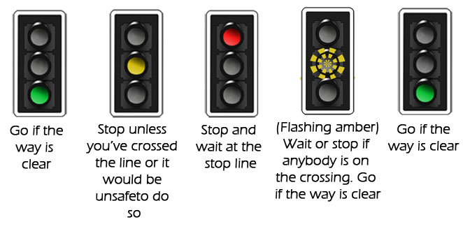
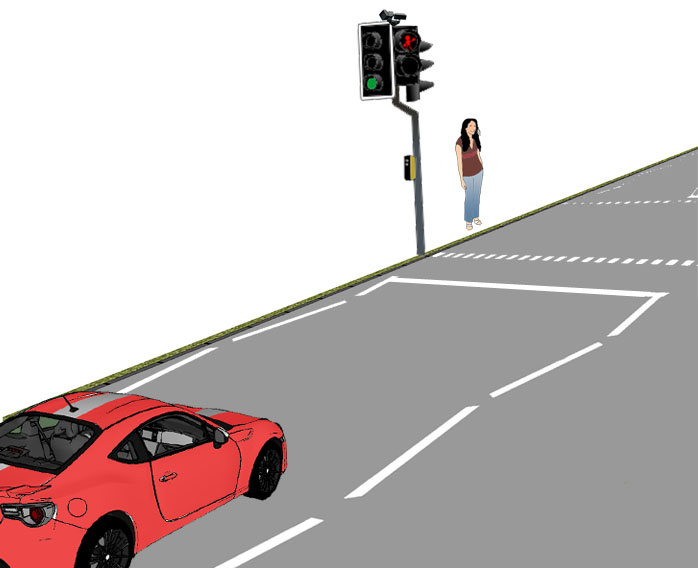
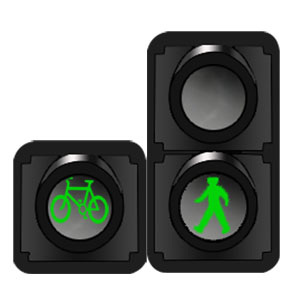
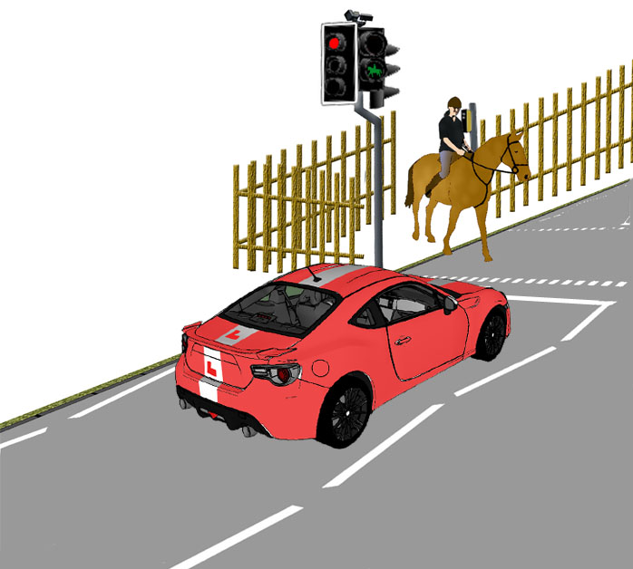

Pelican Crossing
Anticipate the lights changing to red as you approach. If somebody is waiting at the crossing, they are likely to have pressed the button. Sometimes the lights change very quickly afterwards.
Even if nobody is waiting, it’s possible that the button has been pressed so check your mirrors and be prepared to stop as usual.
Remember the specific meanings of the light phases:

The flashing amber stage is unique to the pelican crossing. It operates by a timer and will remain flashing for some time to allow pedestrians to finish crossing.
Puffin Crossing
Puffin crossings have electronic devices which automatically detect when pedestrians are on the crossing. These reduce unnecessary delays in traffic flow.

The light sequence is as normal here, with a short red/amber (prepare to go) stage following the red light.
Toucan Crossing
Toucan crossings allow cyclists to cross safely without unmounting. They are wider than usual to allow for pedestrians and cyclists to cross together, sometimes with dedicated lanes for each.

In queued traffic, allow for the extra width and be careful not to block the crossing.
The light sequence is the same as for a puffin crossing.
Pegasus Crossing
Pegasus crossings are designed for horse riders to cross the road safely without unmounting. They have a button set 2 metres from the ground for the rider and sometimes have a fence or barrier to chicane the horse before it crosses.
They can be combined with Toucan or Puffin type crossings where a button panel is placed lower down aswell.
Respond as you would with any light controlled crossing and be considerate, refraining from excessive engine revs or loud noise which may alarm the horse.
